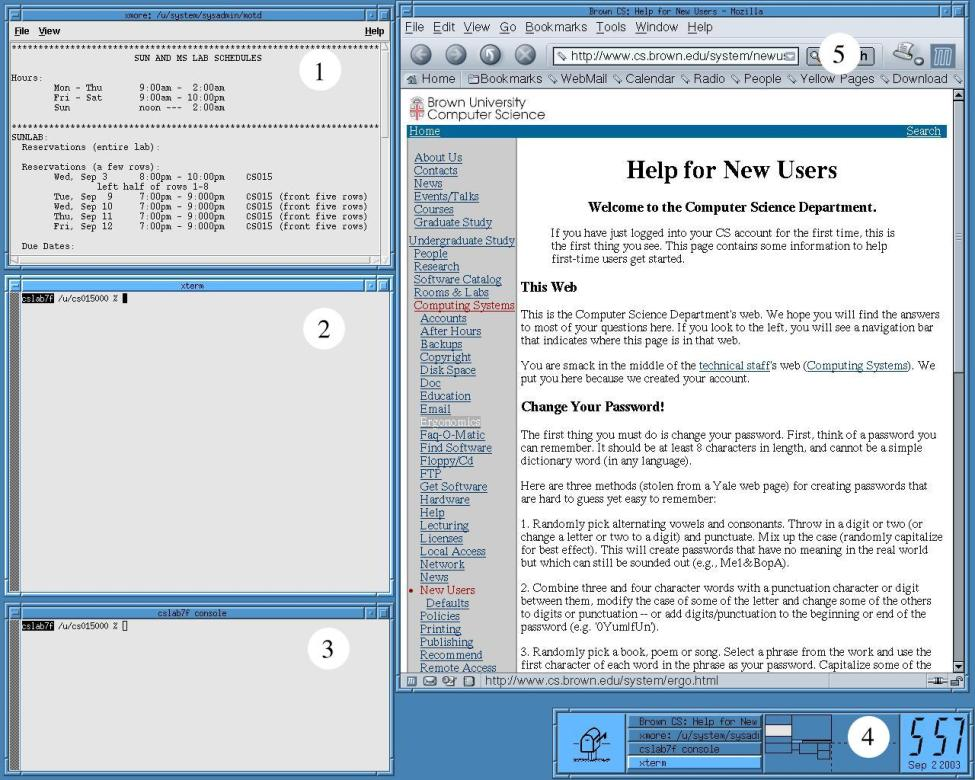
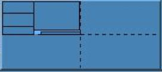

|
PREVIOUS Getting Started |
NEXT Linux Shells |
If you're properly logged in, you will see a screen that looks like this (without the numbers):

A lot of this you are going to learn by just playing around, but here's a quick rundown (numbered windows are explained below):
Your account opens a set of default windows when you log in. All windows are laid out on a desktop, which is the blue background you see. The default windows are:
If you want to type in a window, it must be active. Unlike Windows and Mac OS, in the Linux environment we are using, the active window is the one that has the mouse cursor over it. A window is made active when the mouse pointer enters it, no clicking required. It will then remain active until the mouse pointer enters another window. Note that the active window is not necessarily on top, as it is in Windows or Mac OS. This can be quite helpful at times, but be careful you are not inadvertently typing in a partially hidden window because the mouse cursor is over it!
Move the mouse around and see how the active window changes. Notice how the colors of the windows' frames change as they are made active and inactive.
Almost all windows have a title bar that looks like this:
You can use the title-bar to orient windows. Pressing and dragging any of the mouse buttons on the title bar allows you to move the window. Clicking on the title bar with the left mouse button will pull that window in front of any other windows that may be overlapping it ("popping" the window), while clicking with the right mouse button will push the window to the back of any windows behind it on the desktop ("pushing" the window).
The three buttons on the title bar also have different functions:
- The tab button in the left corner will open the Window Ops Menu. This menu gives you a variety of window operations that may come in handy. For a detailed list of operations, see the Appendix.
- The iconify or minimize button does just that--it will turn the window into an icon in the upper-left corner of the screen. Click on the icon to restore ("de-iconify") the window.
- The maximize button will enlarge the window to take up available space.
Try out some of the window operations. (move, push, pop, iconify, de-iconify, maximize)
Your desktop is larger than it seems! Think of it as 4 screens arranged in a grid, with your current screen being the upper-left. You can move from screen-to-screen using the Function keys (F1 for top-left, F2 for top-right, F3 for bottom-left, F4 for bottom-right), by moving your mouse cursor to the edge of the screen, or by clicking on the appropriate screen in the window manager module in the lower-right corner of your screen. If all of your windows are suddenly missing, check to make sure you haven't accidently moved to another screen.

Play around with your virtual screens. Try dragging windows from one screen to another. Notice how the window manager module is a miniature view of the state of your screens.
If you click the mouse buttons on the desktop (not on a window), you will notice that you get some menus. Each button has a different menu. We are going to give you some highlights here, but the Appendix has a complete listing. The left button gives you the Root Menu, which includes 2 very important items:
XTerm" – This will give you a new shell.
(The type of shell we have been using is
called an xterm, short for X Terminal. There are other kinds. Ask a
consultant.)
XLock" – XLock opens a password-protected
screen saver. Use this every time you walk away from your computer,
even if it's just for a
minute. (Don't turn it on and go away for hours.
If a waitlist starts, you might get kicked off and lose your work)
The right mouse button pulls up the Special menu. One very important item on the Special menu is Logout. This is how you exit the system. Always exit all programs before logging off!
For a complete listing of the default menus and their items, see the Appendix.
Customizing Your EnvironmentOne of the great things about Linux and FVWM (the window manager we are using) is that you have a ton of control over the appearance and feel of your environment. For example, you might want to change the colors of your desktop or put a picture up. For a basic overview of customizing your environment, take a look at the Linux Hints section of the Appendix. For more info, try the CS15 Webpage or ask a consultant. |
|
PREVIOUS Getting Started |
NEXT Linux Shells |